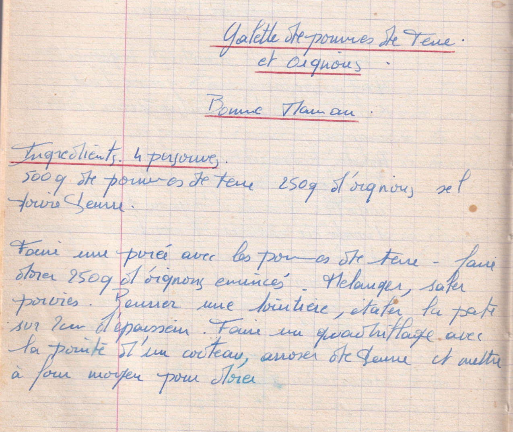

Galette de pommes de terre et oignons
Bonne maman

LISTE DES INGREDIENTS
- 500gr de pommes de terre
- 250gr d'oignons
- Sel poivre
- Beurre
PREPARATION
- Faire une purée avec les pommes de terre
- Faire dorer 250gr d'oignons émincés
- mélanger, saler poivrer
- Beurrer une tourtière, étaler la pate sur 2cm d'épaisseur
- Faire un quadrillage avec la pointe d'un couteau
- Arroser de beurre et mettre à four moyen pour dorer